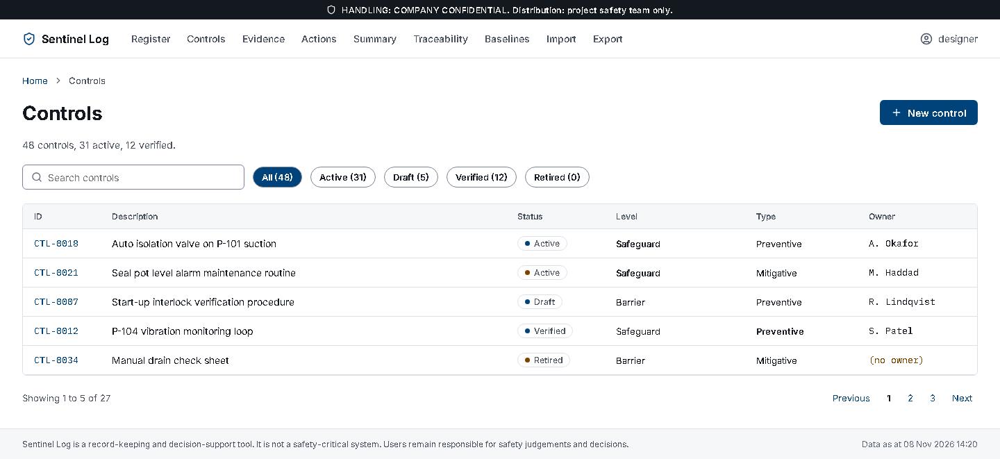

UC-5: Link or create controls; set hierarchy level. Actor: Hazard owner
Main flow
- editor opens UAT-0001 controls tab; tab lists linked controls with hierarchy level and status (req-10).
- editor creates a control from the hazard page; product allocates a fresh identifier server-side and stores hierarchy level, control type, criticality, and status (req-11, req-12).
- editor opens the control detail page; page lists linked hazards so the cross-link reads both ways (req-10).
- editor opens UCTL-0002; page shows implemented status with hierarchy level engineering controls (req-11).
- editor opens UCTL-0003; page shows verified status (req-12).
- editor opens the formal review on UCTL-0004; review shows rejected outcome with required changes, which is how the product records a rejected control with its reason (req-25).
Stills
